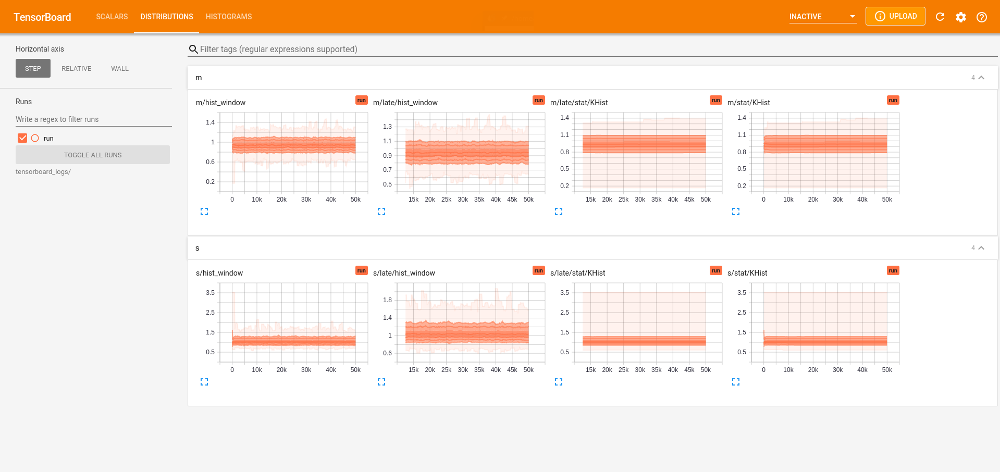

TuringCallbacks
Getting started
As the package is not yet officially released, the package has to be added from the GitHub repository:
julia> ]
pkg> add https://github.com/torfjelde/TuringCallbacks.jlVisualizing sampling on-the-fly
TensorBoardCallback is a wrapper around TensorBoardLogger.TBLogger which can be used to create a callback compatible with Turing.sample.
To actually visualize the results of the logging, you need to have installed tensorboad in Python. If you do not have tensorboard installed, it should hopefully be sufficient to just run
pip3 install tensorboardThen you can start up the TensorBoard:
python3 -m tensorboard.main --logdir tensorboard_logs/runNow we're ready to actually write some Julia code.
The following snippet demonstrates the usage of TensorBoardCallback on a simple model. This will write a set of statistics at each iteration to an event-file compatible with Tensorboard:
using Turing, TuringCallbacks
@model function demo(x)
s ~ InverseGamma(2, 3)
m ~ Normal(0, √s)
for i in eachindex(x)
x[i] ~ Normal(m, √s)
end
end
xs = randn(100) .+ 1;
model = demo(xs);
# Number of MCMC samples/steps
num_samples = 50_000
# Sampling algorithm to use
alg = NUTS(0.65)
# Create the callback
callback = TensorBoardCallback("tensorboard_logs/run", num_samples)
# Sample
chain = sample(model, alg, num_samples; callback = callback)While this is sampling, you can head right over to localhost:6006 in your web browser and you should be seeing some plots!

In particular, note the "Distributions" tab in the above picture. Clicking this, you should see something similar to:

And finally, the "Histogram" tab shows a slighly more visually pleasing version of the marginal distributions:

Note that the names of the stats following a naming $variable_name/... where $variable_name refers to name of the variable in the model. For more information about what the different stats represent, see TensorBoardCallback.
Choosing what and how you log
Statistics
If you want to log some other statistics, you can manually create the DataStructures.DefaultDict which maps a variable name to the corresponding statistic estimator:
# Let's instead look at the auto-correlation and the histogram:
using TuringCallbacks.OnlineStats
make_stats() = Series(AutoCov(10), KHist(10)) # constructor for new entries in the dictionary
stats = DefaultDict{String, Any}(make_stats)
callback = TensorBoardCallback("tensorboard_logs/run", num_samples; stats = stats)Filter variables to log
Maybe you want to only log stats for certain variables, e.g. in the above example we might want to exclude m and exclude the sampler statistics:
callback = TensorBoardCallback("tensorboard_logs/run", num_samples; stats = stats, exclude = ["m", ], include_extras = false)Or you can create the filter (a mapping variable_name -> ::Bool yourself:
var_filter(varname) = varname != "m"
callback = TensorBoardCallback("tensorboard_logs/run", num_samples; stats = stats, variable_filter = var_filter)Types & Functions
TuringCallbacks.TensorBoardCallback — Typestruct TensorBoardCallback{F, T1, T2}Wraps a TensorBoardLogger.TBLogger to construct a callback to be passed to Turing.sample.
Usage
TensorBoardCallback(lg::TBLogger, num_samples::Int; kwargs...)
TensorBoardCallback(directory::String, num_samples::Int; kwargs...)Constructs an instance of a TensorBoardCallback, creating a TBLogger if directory is provided instead of lg.
Arguments
num_samples::Int: Total number of MCMC steps that will be taken.
Keyword arguments
num_bins::Int = 100: Number of bins to use in the histograms.window::Int = min(num_samples, 1_000): Size of the window to compute stats for.window_num_bins::Int = 50: Number of bins to use in the histogram of the small window.stats = nothing: Lookup for variable name to statistic estimator. Ifisnothing, then aDefaultDictwith a default constructor returning aOnlineStats.Seriesestimator withOnlineStats.Mean,OnlineStats.Variance, andOnlineStats.KHistwill be used.buffers = nothing: Lookup for variable name to window buffers. Ifisnothing, then aOnlineStats.MovingWindow(Float64, window)will be used.variable_filter = nothing: Filter determining whether or not we should log stats for a particular variable. Ifisnothinga default-filter constructed fromexcludeandincludewill be used.exclude = String[]: If non-empty, these variables will not be logged.include = String[]: If non-empty, only these variables will be logged.include_extras::Bool = true: Include extra statistics from transitions.
Fields
logger::TensorBoardLogger.TBLoggerUnderlying logger.
num_samples::Int64Total number of MCMC steps that will be taken.
num_bins::Int64Number of bins to use in the histogram.
window::Int64Size of the window to compute stats for.
window_num_bins::Int64Number of bins to use in the histogram of the small window.
variable_filter::AnyFilter determining whether or not we should log stats for a particular variable.
include_extras::BoolInclude extra statistics from transitions.
stats::AnyLookup for variable name to statistic estimate.
buffers::AnyLookup for variable name to window buffers.